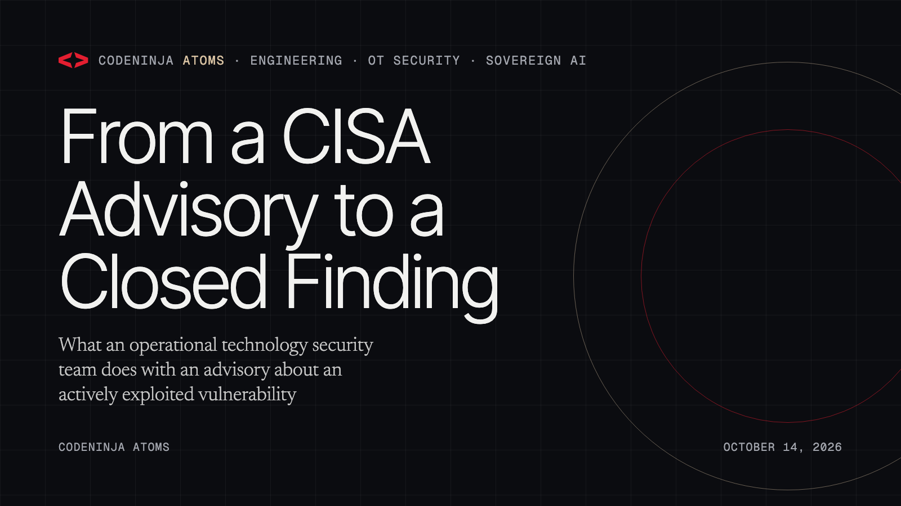

From a CISA Advisory to a Closed Finding
What an operational technology security team does with an advisory about an actively exploited vulnerability, traced through one published system of context: the advisory becomes a threat intelligence item, the item seeds detection rules, a finding scores the operator's own assets, a named analyst accepts or rejects the risk, and the evidence a NERC CIP audit asks for is assembled on the way.

A federal advisory lands. It says state affiliated actors are actively exploiting a class of programmable logic controller across United States critical infrastructure. The question an operational technology security lead has to answer the same morning is not whether the advisory is serious. It is: which of our assets are that device class, what are we watching on them, who owns the decision, and what will we be able to show the auditor afterwards.
One of the sixteen open reference architectures on this site, Grid Context Watch, is written for exactly that operator, an energy and utilities company in the United States with substations behind electronic security perimeters. Its opening cites the advisory class above as one of the three facts that shaped the design, beside the federal order that created the reliability standards and the rule that made internal network security monitoring an obligation for high and medium impact bulk electric system cyber systems. This note walks one advisory through the design's object model, step by step, using only what the paper says.
The objects the advisory touches
The design holds the operational technology estate as a system of context: fourteen typed objects joined by typed, directional links, published as JSON in the paper's package. Seven of the fourteen take part in handling an advisory.
| Object | What it is in the paper | Its part in the walk |
|---|---|---|
| Threat intelligence item | A document object; items arrive attributed and dated from the bodies named on the object, which the paper lists as vendor feeds, E-ISAC, DOE and INL, plus the collective feed the contract requires | The advisory enters here |
| Detection rule | An event and record object; a threat intelligence item seeds detection rules | What the sensors now look for |
| OT asset | The focal object of the model, held inside a substation that carries a CIP impact rating; the asset links to CIP evidence through its CIP categorization | What the advisory is about |
| Vulnerability finding | An event and record object that scores an asset and is assigned to an analyst for risk acceptance | The advisory applied to one asset |
| Anomaly alert | Points at the detection rule that raised it and the asset it implicates | What fires if the rule matches |
| Investigation case | Groups alerts and locks pcap evidence to itself | Where a real event is worked |
| CIP evidence artefact | A document object the asset's categorization obliges the operator to retain | What the auditor is shown |
The eighth participant is a person. The OT security analyst is an object too, with role, role based access control entitlements and a training record, and every status change below carries one by name.
The walk
1. The advisory becomes a threat intelligence item. It arrives through the external intelligence provenance class, attributed to its issuing body and dated. The paper insists on the provenance class because every event carries its source, its class and its capture timestamp, so any property on any object can show where it came from. An advisory with no origin would not be a record in this model.
2. The item seeds detection rules. This is a typed link in the object model, not a process someone remembers to run. The detection engine itself is a procured OT monitoring platform for protocol parsing and signatures; Table 2 of the paper chose it over a from scratch build on Zeek and Suricata because the requirement asked for vendor grade OT signatures, accurate ATT&CK for ICS mapping and machine speed collective intelligence. The ontology and the agentic layer sit above it. So the rule that the advisory seeds lives in the platform, and the object model holds the link from the advisory to the rule.
3. A vulnerability finding scores the affected assets. The finding is the advisory applied to one OT asset. Because the asset sits inside a substation with a CIP impact rating and carries its own CIP categorization, the finding inherits what the operator is obliged to do about that asset without anyone looking it up. The finding is then assigned to an analyst for risk acceptance.
4. A named analyst accepts or rejects the risk. The paper is plain about where the decision lives: every alert that moves from new to triaged, every case that opens, and every vulnerability risk acceptance carries a named analyst, held in the object model. Agents on the work surface draft triage notes, retrieve playbooks and assemble evidence, but the decision itself is a person's, recorded against the case.
5. If the rule fires, the alert already knows its history. An anomaly alert points at the detection rule that raised it and the asset it implicates. The rule points back to the advisory that seeded it. An investigation case groups the alerts and locks the packet capture to itself. The paper's own sentence for this is that one query traverses the whole argument: from a single alert, the query reaches the rule that fired, the affected asset, that asset's substation and its impact rating, the analyst who owns the triage, and every evidence artefact the asset's categorization obliges the operator to retain.
6. The audit trail was written on the way. The CIP evidence artefacts an asset owes are decided by its categorization, and the retention clock the paper names is three years, after which the evidence is produced to the regional enforcement entity. The decision record is the operator's: every alert triage, escalation, risk acceptance and evidence review was taken by a named person and kept as a case or a compliance artefact, so the trail the auditor reads is the trail the operator wrote.
What never happens
Nothing in the walk writes into a control network. Every flow in the design is a read out of a source, one way out of the electronic security perimeters, through a constrained broker conduit in a DMZ by default and across hardware data diodes at the highest impact perimeters, where policy demands demonstrable one way flow. The paper's reason is the same advisory that opened this note: a monitoring capability that can write is also a path an adversary can write, and federal advisories document actors exploiting exactly the device classes at the end of those wires. An active probe would put packets onto a control path, so analytics ride a copy of the traffic and never add a second writer to the wire.
Nothing leaves the operator's hardware either. The reasoning model is GLM 5.2 under a plain MIT licence on one node of eight 141 GB HBM class GPUs, and the embedder is Qwen3-Embedding-0.6B under Apache 2.0, chosen because whole playbooks and CIP procedures retrieve as single passages inside its 32K window. The weights, the indexes, the captures and the artefacts stay in the operator's own data center.
Why the join is the point
A sensor answers one slice. The audit, the investigation and the vulnerability decision each need the alert joined to the asset, the asset to its impact rating, and the case to its evidence. A document store holds the same records side by side but cannot traverse them, so each of those joins happens in an analyst's head or not at all. That is the whole argument for building the model as a system of context rather than as a better dashboard over the monitoring platform, and it is why the advisory above can be followed from its arrival to the auditor's desk without a single hand assembled spreadsheet.
What this note does not claim
The paper does not describe a particular advisory feed, catalogue or scoring service, and this note does not either. It names the class of advisory and the bodies that issue intelligence, and it leaves the choice of feed to the operator's contract. It also does not claim that the design patches anything: the write path stops at cases, triage drafts and evidence bundles on the model, and change management on the assets themselves stays with the operator's own CIP-010 process.
Use the design
The fourteen objects and their links are in the paper's package as `ontology/objects.json` in the hyper-ontology/1 format, and the same rows are in the Vertical-Driven Architectures dataset and served live by the codeninja-research MCP server, so a coding agent can ask which design holds a vulnerability finding object and read why. The paper is citable as DOI 10.5281/zenodo.23157957. It was reasoned on CodeNinja Praxis and its object model imports into Hyper Ontology.
About CodeNinja
CodeNinja is a Middle Eastern-American artificial intelligence lab focused on building self-improving systems. We are reinventing knowledge work to close the loop between vertical AI use cases and the generalized intelligence that fuels it, accelerating the path toward organizational superintelligence.